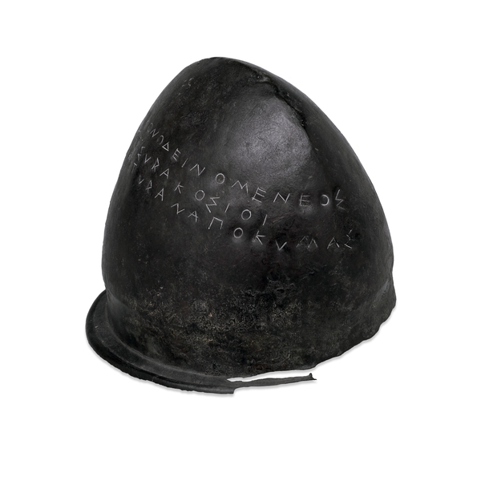

『ヒエロン――または僭主的な人』
公開日：
")
- 作者: クセノポン,松本仁助
- 出版社/メーカー: 京都大学学術出版会
- 発売日: 2000/06
- メディア: 単行本
- クリック: 2回
- この商品を含むブログ (1件) を見る
『クセノポン小品集 (西洋古典叢書)』の一遍。この本に収録されている『ラケダイモン人の国制』が読みたくて買ったのだけど、それはちょっと我慢して、順番に読んでいる。
本書に出てくる“ヒエロン”とは、シラクサの割と有名な僭主（王統の血筋によらず、実力により君主の座を簒奪し、身分を超えて君主となる者）であるヒエロン1世のこと。
ヒエロン1世（ギリシア語: Ιέρων Α΄）は、デイノメネスの息子、ジェーロ（筆者注：ゲロンとも）の弟であり、紀元前478年から紀元前467年までシュラクサイ（現シラクサ。コリントスの植民市でシチリア島でもっとも有力な都市）の僭主を務めた。彼の治世において、彼はシュラクサイの勢力を大いに高めた。彼は、ナクソスやカターニアからレンティーニ（いずれもシチリア島の街）に住民を移住させてカターニアにはドーリア人を居住させ、アグリジェント（筆者注：シラクサと並ぶシチリア島の有力市）と同盟を結び、レギオンの僭主アナクシラスと敵対するロクリア人を取り入れた。
彼の最も重要な軍事的功績は、紀元前474年のクマイの戦いでエトルリアとカルタゴを破り、それによりカンパニア（筆者注：イタリア半島の脛のあたり）のギリシア人をエトルリア人（筆者注：イタリア半島北中部、トスカーナ、つまりフィレンツェとかのあたりに住んでた割と文化の高い部族）による支配から守ったことである。この戦争を記念する碑文の彫られた銅の兜（現在は大英博物館に収蔵されている。）がオリンピアに奉納された。
ヒエロン1世の治世は、ギリシアの歴史上初めての秘密警察が創設されたことで特徴付けられるが、彼は文学や文化の進歩的なパトロンであった。詩人シモーニデース（筆者注：本書に登場）、ピンダロス、バッキュリデース、アイスキュロス、エピカルモスや哲学者クセノパネスらは、彼の宮殿で活動した。彼はまた、全ギリシアの運動競技会にも熱心に参加し、馬レースや二輪馬車レースで数々の優勝を果たした。例えば、紀元前470年のデルポイでの二輪馬車レースや紀元前468年のオリンピアでの二輪馬車レースで優勝した。
ヒエロン1世は、紀元前467年にカターニアで死去し、その地で埋葬されたが、カターニアの元の住人が戻ってきた際に破壊された。シュラクサイにおける僭主制は、彼の死後、わずか1年程度しか続かなかった。

大英博物館収蔵の兜ってこれかな。「奴隷制からギリシアを解放した」と書かれているらしい。
ちなみに2世はポエニ戦争の頃のひとで、新ローマ派、というか反カルタゴ派だった。第一次ポエニ戦争ではローマとともにカルタゴを破るが、死後、シラクサは彼に遺志に反し、ローマと敵対。“アルキメデスの武器”で籠城するも、最後には破れ、独立を失った。この辺りの顛末は、『ヘウレーカ』の題材にもなっている。
")
- 作者: 岩明均
- 出版社/メーカー: 白泉社
- 発売日: 2002/12/19
- メディア: コミック
- 購入: 16人 クリック: 62回
- この商品を含むブログ (87件) を見る
さて、本書はヒエロン1世と、お抱えの詩人シモニデスの対話になっている。
シ「僭主って羨ましいっすよねー」
ヒ「そんなことねーよ、辛いことばっかりだよ」
ヒエロン1世の主張は、だいたい以下の用にまとめられるように思う。
- 限界効用逓減の法則。もう十分持ってると、追加されてもたいして嬉しくないよ。庶民の方が何かをゲットしたときのうれしさ、半端ないよ。
- 地位や財産を守ることの難しさ。だれも信用できなくてつらいよ。
2つ目は「ダモクレスの剣」みたいな話に近いかも。
ある日、ダモクレスがシチリアの僭主・ディオニュシオスの権力と栄光を羨み、追従の言葉を述べた。すると後日、ダモクレスは僭主から豪華な宴の招待を受けた。宴は贅を極めたものであったが、その豪華な席からダモクレスがふと頭上を見上げると、天井から今にも切れそうな細い糸（馬の尾の毛）で、剣が吊るされていた。僭主・ディオニュシオスは、ダモクレスの羨んでいる僭主という立場が、いかに命の危険をともなうものであるかを示したのである。
シモニデスはあれやこれやと例を挙げるけれども、ヒエロン1世を論破できない。読者が「じゃぁ、僭主なんかサッサとやめーや」と思い始めるころ、シモニデスはまさにそこを突く。
ヒエロン様、僭主であることがそのように悪いことであり、あなたがそういう認識を持っておられるのなら、このような大きな災厄からあなたが離れられないのは、また、一度僭主についたものは誰も、あなたも他の人もその地位を手放さなかったのは、いったいどうしてなのでしょうか。
ヒエロン1世の答えはこうだった。
僭主の地位から離れることは不可能だから、この地位は最も惨めなのだ。
僭主をやめたからと言って、僭主のときに受け取ったものを返しきることはできない。僭主のときに市民へ与えた災厄――投獄、死刑、戦争、徴税――を償いきることはできない。なので、恨みを引き受けて破滅するか、運よくそれらから逃れて命を全うするまで、僭主をやめることなどできない。憧れてなったが最後、止めることのできない呪いなのだ。
そこでのシモニデスの切り返しは、なかなか見事なものだった。シモニデスが言うには、支配する（僭主でいる）ことと愛される（恨まれない）ことは両立が可能であるという。
シモニデスの主張はこうだ。
わたしは、庶民と競うのは僭主にふさわしくない、という意見をもっています。
なぜなら、僭主は庶民から資金を得ている。ぶっちゃけていえばチート（ずる）をしているわけで、それで庶民に勝っても賞賛はされないし、また、万が一負ければ蔑まれるのがオチだろう。
一方で、シモニデスはこうも言う。
だが、ヒエロン様、わたしは、諸国の他の支配者とは競争されますように、と申し上げます。
僭主の支配する国が他の国よりも優れていれば、市民は僭主を賞賛し、愛するだろう。わざわざ美少年を口説くまでもない、進んであなたに股を開きまっせ、というわけだ。
市民は僭主に財産を与えているわけではない。預けているだけだ。だから、僭主は共和体のためにそれを有効に活用すべきであって、私物化するべきではない。そもそもなぜ都市が王ではなく、なぜ高貴な血を受け継がない者を僭主に戴くのか。それはその人が能力に優れていると期待されており、かつ都市のためにそれを発揮してくれると信じているからだ。それを裏切れば、市民は僭主の地位を渇望するもう一人にその座を与えるだろう。逆に言えば、その期待に応えてさえいれば、ヒエロン1世は何もおびえる必要などない。
さあ、ヒエロン様、心配しないで友人を富まされるといいでしょう……国を強大にされるとよいでしょう……自国のために同盟国を獲得されよ……祖国をあなたの家と、国民をあなたの友人と、友人を自分の子どもと、子どもをまさに自分の生命とみなし、そして恩恵を施すことにおいては、これらすべてのものを凌駕するように努められよ。
なぜなら、あなたが、親切になさる点で友人に勝っておられれば、敵はあなたに対抗することができないからです。
たぶんこれは、僭主だけにあてはまる話ではないのだろうと思う。